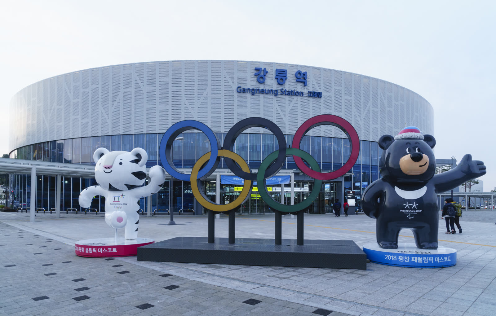
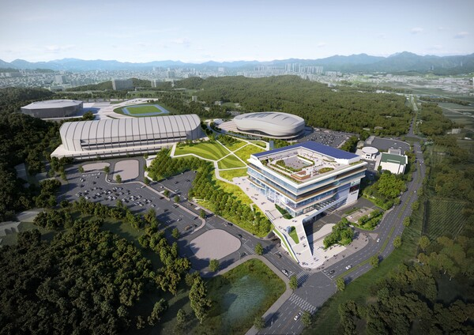

Beyond Mobility,
Connected World
이동을 넘어,
연결된 세계
인천·서울에서 강릉까지, 참가자 여정 전 구간을 하나의 포털에서 안내합니다. 공항 셔틀·행사장 순환·전용차량을 한 곳에서.From Incheon and Seoul to Gangneung, your entire participant journey in one portal — airport shuttles, venue loops, and private cars all in one place.
ITS 2026 참가자 셔틀ITS 2026 Participant Shuttles
노선을 선택하면 정류장·시간표·예약이 있는 상세 페이지로 이동합니다. RIDEUS Events · GroundK 운영.Select a route to open its detail page with stops, timetables, and booking. Operated by RIDEUS Events · GroundK.

공항 웰컴데스크 + 입국 셔틀 · 주요 호텔 → 강릉역 · 10.17~19Airport welcome desk + arrival shuttle · Major hotels → Gangneung Station · 10.17–19
노선 보기View Routes →폐회식 후 출국 셔틀 · 16:00 / 17:00 / 18:00 · 10.23Departure shuttle after closing ceremony · 16:00 / 17:00 / 18:00 · 10.23
노선 보기View Routes →
총회기간(10.19~23) 정기 순환 · 경포/강문/주문진/정동진 · G1 도심 · 내부 4정류소Regular loops during the congress (10.19–23) · Gyeongpo/Gangmun/Jumunjin/Jeongdongjin · G1 downtown · 4 on-site stops
노선·시간표 보기View Routes & Timetable →전용 차량으로 더 유연하게More flexibility with a private car
공항 영접부터 강릉 시내·행사장까지 도어투도어. 셔틀 시간표에 얽매이지 않는 기사 포함 전용 차량 — 연사·임원 의전과 팀 이동에.Door-to-door from airport greeting to Gangneung city and the venue. A chauffeured private car free from shuttle timetables — for speaker and executive protocol and team travel.
전용 차량 안내Private Car Guide →이동을 더 가볍게Travel Made Lighter
2026 ITS World Congress — 강릉 세계총회2026 ITS World Congress — Gangneung
도착부터 출국까지 지원Support from Arrival to Departure
7개소 안내데스크와 24시간 종합상황실이 참가자 여정 전 구간을 지원합니다.Seven help desks and a 24-hour control room support participants across the entire journey.
RIDEUS Events 운영팀RIDEUS Events Operations Team
셔틀·의전·단체 수송 문의를 도와드립니다. 평일 09:00–18:00 (KST).We assist with shuttle, protocol, and group transportation inquiries. Weekdays 09:00–18:00 (KST).
수송 안내데스크Transportation Help Desks
공항·역·터미널·행사장 안내데스크에서 셔틀 탑승 위치와 교통 안내를 다국어로 제공합니다.Help desks at airports, stations, terminals, and the venue provide shuttle boarding locations and transportation guidance in multiple languages.